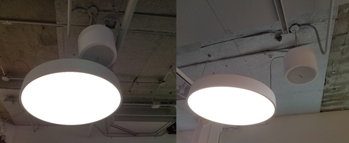

| Company | Role | Skills | Year |
|---|---|---|---|
| Arup | Technology Consultant | Stakeholder Management | 2019 |
| User Interviews | |||
| Requirements Gathering | |||
| System Calculations | |||
| CAD - Revit/MicroStation |
While considering client and industry constraints, I collaborated with several departments across Arup to design the public address speaker system for the Toronto Pearson Airport. To come up with the design, I considered concepts like audibility, intelligibility, sound projection cones, listening planes, installation pattern layouts, and more.
Founded in 1946 by engineer-philosopher Sir Ove Arup, the Arup Group is an independent firm of designers, planners, engineers, architects, consultants, and technical specialists. The impact of the Arup Group can be seen worldwide, from concert halls like the Sydney Opera House to designing the physical connections between countries. For over 7 decades, the firm has been solving the world’s most complex challenges and has been at the forefront of the most ambitious engineering endeavours.
The Technology Department at Arup is responsible for the delivery of digital technology systems for the built environment, including real-time crowd simulation and management, security platforms, integrated data networks to enable smart buildings, and more
Co-op students are always given the opportunity to make meaningful contributions to real projects, and my time there was no different. I was given the opportunity to work with our largest client, the GTAA (Greater Toronto Airports Authority). Specifically, I was working on the redesign of the technology systems of Toronto Pearson Airport; one of them being the public address system.
Public address systems are electronic systems used in public venues to provide crucial information to large audiences in or near the venue. A typical public address system has several components. The most prominent component being the speaker, which can be a horn, wall baffle, ceiling-mounted speaker, or even a column speaker; each serving a distinct purpose. Other components of the system can include cabling, an amplifier, a controller, a data network, a noise sensor, and an audio input source, which can be the data network, an actual microphone, or even a telephone.
To address this concern of overcrowding, the Toronto Pearson Airport has been renovating and creating net new physical real estate within the terminal. For these new spaces, the GTAA contracted the Arup Group to provide design, installation, and consultation services for several technology systems.
In certain settings, the quality of sound can amplify emotions. Well-designed sound systems in concert halls allow listeners to immerse themselves in the music. In public venues like sports stadiums, the design can allow fans to feel closer to the game. In other cases, well-designed sound systems can save millions of lives. The communication of important and urgent information quickly and coherently is key when large masses of people constantly flow in and out of a building. While a speaker system may be taken for granted in most cases, it can be the difference between life or death in extreme situations. In less extreme situations, these speaker systems are vital in conducting crowd control by directing people to the right areas of buildings while also minimizing stress and confusion for the passengers.
When considering the design of a public address system, audibility and intelligibility need to be considered. Audibility refers to the ability of a sound system to be heard. Intelligibility, on the other hand, refers to the ability of a sound system to be understood. Any issues with audibility can easily be addressed dynamically with the use of noise sensors and amplifiers, and by increasing the wattage of a speaker. This ability to be heard is measured using decibel values to indicate the sound pressure levels (SPL).
Intelligibility is an attribute that is more difficult to address. The ability to be understood is measured using Speech Transmission Index (STI) values. Intelligibility is not an aspect of a speaker system that can be altered dynamically like audibility since it depends on multiple factors such as ambient noises, the material and thickness of the walls, the material and placement of any furniture, or even the quality of the speakers themselves.
When considering the SPL and STI requirements of a space, an important concept to consider is how sound waves behave upon projection from the speakers. As sound waves travel through a medium, there is a loss in decibel values. For ceiling-mounted speakers, the assumption can be made of a zero-decibel loss vertically straight down from the speaker. When viewed two-dimensionally, it's also assumed that sound travels in the form of an equidistant arc. The extremities of this arc are defined as the points at which a six-decibel loss is observed. When viewing this sound projection three-dimensionally, the resulting shape is a cone of dispersion.
When considering the design, an important aspect to consider is the listening plane. The listening plane is defined as the height at which the intended audience’s ears will be for most of the time. As illustrated below, the listening plane is typically at the height of a speaker’s six-decibel down points.
In the case of corporate offices, the listening plane would typically be four feet from the finished floor, because everyone in the space would be sitting for most of the day. In the case of busy airports, the listening plane would be five feet from the finished floor, because most passengers are always on their feet. An important note to mention is the listening plane is based on the finished floor, rather than the structural floor because the venue owner could potentially add a foot of decorative flooring and alter the behaviour of sound waves in the space.
The main objective in deciding the placements of the speakers and cabling is to cover an area effectively by providing audible and intelligible sound. In the case of the sound being inaudible with a flawed speaker system design, the solution is not to simply raise the volume of every single speaker to satisfy SPL value requirements. This would result in a listener directly under a speaker receiving an undesirable number of decibels. Even in the unlikely case of the SPL values being satisfied with the simple increase of volume, the STI value will most likely not meet industry standards. The increase in volume inevitably results in an increase in noise, which reduces sound quality.
Due to confidentiality reasons, none of the construction drawings from the airport may be disclosed for this case study. However, examples and visualizations of concepts will be illustrated in a sample office layout, as shown below. Based on estimations of furniture size, the office layout will be approximated to possess 700 square feet of area. Due to the setting of the floor plan being a typical office environment, all speakers illustrated will be an industry-standard 4-inch diameter ceiling-mounted speaker.

There are two possible general configurations for the speaker system layout. The first of which is the standard square pattern layout, displayed below on the left. The alternative, the hexagonal pattern layout, is displayed below on the right.
Upon visual inspection of the above images, it can be seen that the hexagonal layout pattern provides more surface area coverage, due to the minimization of the gaps between dispersion cones. Therefore, it can be established that the hexagonal pattern layout provides a more effective surface area coverage while being similar in cost. Depending on the dimensions of the physical space, the hexagonal layout pattern can either be slightly cheaper or slightly more expensive than a square layout pattern.
Another concept to consider when optimizing the design is that the more speakers there are in a system, the lower the wattage requirement for each speaker. In an ideal world with an unlimited financial budget, there would be speakers in every single ceiling tile with minimal wattage provided to produce the auditory illusion of one uniform sound being emitted from above the listener harmoniously. The figure below depicts the two possible layout patterns given that there are no restrictions on the number of speakers that can be installed.


Something to consider when debating between a square layout pattern and a hexagonal layout pattern is the intersection of the cones of dispersion with the listening plane. If there exists a point of intersection between cones of dispersion above the listening plane, an echo may occur. The resulting echo within the space may become irritating to the targeted audience, and more importantly, unintelligible. Conversely, if there exists uncovered regions that are not encompassed by the cones of dispersion, there is a possibility of the broadcasted message being inaudible to the targeted audience. From a two-dimensional perspective, these issues are incredibly simple to address. However, in a three-dimensional environment, issues begin to arise. Due to the areas of coverage being conical rather than two-dimensional arcs, there is physically no perfect solution that allows for the absence of overlap, or uncovered regions. This decision ultimately relies on the priorities of the client.
In the case of the client not having an opinion, a weighted decision matrix is required to choose between the two speaker pattern layouts. To construct the matrix, several factors of the project must be considered and weighted. The budget of a project is very important, but it can always be altered provided there exists a necessary need, so it will be weighted highly, but not as the highest. The aesthetic appearance of the speaker system leaves an impression upon the client regarding the designer’s level of competency, so it's also important. However, in the consideration between public safety and aesthetic appearance, public safety takes priority and possesses the highest weighting. Although the most important parties to consider are the client and the users of the public space, a third party to consider is the contractor responsible for the physical installation of the system. In consideration of these contractors, the level of intricacy involved in the installation process should also be considered, but not weighted as highly as other factors. For the purposes of this case study, the ideal pattern layout of the two can be determined with the following decision matrix.
| Criteria | Weight | Square | Hexagonal | ||
|---|---|---|---|---|---|
| Rating | Score | Rating | Score | ||
| Cost-Efficient | 8 | 7 | 56 | 7 | 56 |
| Sound Coverage | 10 | 7 | 70 | 9 | 90 |
| Installation Simplicity | 5 | 3 | 15 | 2 | 10 |
| Aesthetics | 8 | 6 | 48 | 5 | 40 |
| Total Weighted Value | 189 | 196 | |||
Although the square pattern layout is more aesthetically pleasing and simple to install, the hexagonal pattern layout proves more desirable from a sound coverage perspective. The difference in cost between the two patterns is negligible so the sound coverage is the deciding factor.
A two-dimensional design principle that is typically used within the Technology Department at the Arup Group is the assumption of the angle between the two six-decibel down points that are emitted by a single speaker. Most manufacturers provide a polar coverage specifications sheet with each public address speaker, stating the exact coverage angle of the speaker. However, every speaker typically produces a coverage angle less than what is stated. Designers at the Arup Group determined a safe practice in simply assuming all speakers to possess a coverage angle of 90° between the six-decibel down points.
In some cases, to save on costs, the fire alarm public address speaker system can be integrated with the standard public address speaker system. The fire alarm public address speaker system broadcasts the actual fire alarm signal, as well as any directions towards the emergency exits. This service is required for life and safety standards in a building. This service will, of course, need to be prioritized over the standard public address speaker system so that in the case of a fire, the emergency broadcast can interrupt a broadcast for someone late to a flight. This integration of the fire alarm system into the public address speaker system also implies the need for more robustness in the system. This can mean anything from multiple cable paths being required in the case of overheating failure, to multiple amplifiers being required in the case of component failure. At the bare minimum, two amplifiers would be designated to the same space, with each amplifier being connected to half of the speakers. This is so that in the case of one amplifier malfunctioning, half of the speakers remain operational. Meeting fire standards also implies rating the wires and speakers to be fireproof for a certain length of time so that they can be operational in times of need. The amplifier must then also be more robust to be able to satisfy the SPL requirements due to the loud nature of emergency situations. In the case of the sample office layout requiring fire safety integration, a typical ceiling-mounted speaker can be assumed to possess a wattage of 90W for the required SPL and STI values. For the amplifier power requirements, due to fire alarm standards compliance, a wattage of 1700W would be required.
For the amount of space between speakers, a typical rule of thumb is to place the speakers as far apart as twice the distance from the listener’s ear to the ceiling. Although each case may vary, this rule of thumb is approximately accurate from a mathematical perspective. From above, the horizontal distance between the zero-decibel and six-decibel down points at the height of the listening plane can be calculated. In the below equation, h represents the height of the ceiling, and L represents the height of the listening plane. Gamma is the assumed coverage angle between the six-decibel down points, and r represents the horizontal distance between the zero-decibel and six-decibel down points.
From the assumption regarding coverage angles, the following can be said:
From the above calculation and illustration, it can be established that the vertical distance between the ceiling and the height of the listening plane is equal to half of the distance between the centre points of two ceiling-mounted speakers. So, in terms of the spacing, the speakers must be placed as far apart as twice the distance from the listening plane to the ceiling.
In most cases, a tight budget is imposed by the client. This often removes the possibility of installing the ideal number of speakers. To determine the appropriate number of speakers required for installation, certain equations need to be utilized. To determine the appropriate number of ceiling-mounted speakers required in a square pattern layout for a certain surface area, the below equation is required. In the equation, N represents the number of speakers, Ac represents the surface area of the space, and (h-L) is the ceiling height subtracted by the listening plane height. Gamma is the coverage angle of the speaker, which is assumed to be 90 degrees.
In regards to the sample office layout, the calculations would be conducted as follows:
| Square Pattern Layout | Hexagonal Pattern Layout |
|---|---|
From the above, it's clear that both pattern layouts result in a similar number of speakers being required for a floorplan of this size.
As is the nature of most construction projects, there is never a shortage of the number of requirements and constraints that are posed by the client, industry standards, contractors, or even from internal company standards and best practices. Due to the nature of the project, not a lot of time is spent on the initial determining of requirements and constraints. This is because most are long-standing requirements and constraints that are typical of the construction industry. However, new requirements and constraints could appear at any time at the request of the client during a short-notice meeting.
The design requirement for a public address speaker system can be simply summarized as the public masses having to understand anything that is broadcasted from the speakers. This requirement, however, has several components. There are industry standards that demand speaker systems to output certain STI values for buildings with different purposes. The table below displays the range of STI values along with the descriptive ratings for each index value according to IEC 60268-16.
| STI Value | Descriptive Rating of Audio |
|---|---|
| 0-0.3 | Bad |
| 0.3-0.34 | Poor |
| 0.45-0.6 | Fair |
| 0.6-0.75 | Good |
| 0.75-1 | Excellent |
According to industry standards, an STI value of 0.45 is required at the minimum for buildings that do not require any life and safety measures. For a building such as an airport, an STI value of at least 0.6 would be required to be following fire safety standards such as NFPA 72. In terms of audibility, the only requirement is for the six-decibel down points of each public address speaker to be in contact with the established listening plane.
As with any project, there are important constraints to take into consideration, which are imposed both by industry standards and by the client. In terms of client constraints, there is a financial budget that is predetermined for the speaker system. To satisfy this constraint, the consultant may not place speakers in as many places as they would like to.
Another constraint is the placement of speakers in the physical space. In the case of ceiling-mounted speakers, all speakers must be installed directly in the centre of a ceiling tile for aesthetic and structural purposes. Any slight deviance would indicate a lack of professionalism to the client. This is a similar constraint for the lighting services of a building, which can be seen below.

There are also industry constraints in terms of the number of speakers that can be connected to an amplifier. In most situations, a speaker system should only load an amplifier to 70-80% of its capacity. In other words, if a speaker system consists of 100 speakers that are each respectively rated at 0.7 Watts, the amplifier should ideally be rated for 100 Watts. This prevents the possibility of noise or any distortions in the broadcasted message and allows for the possibility of additional speakers being added in the future. This overloading of an amplifier can be analogous to maximizing the volume of a stereo system inside a vehicle, which results in static noise.
Another factor to consider when designing the speakers to be in the centre of each ceiling tile is the size and shape of the ceiling tiles. The speaker system must be designed following the ceiling tile layout and ceiling tile sizes that are chosen by the architect or interior designer. Due to the hierarchy of building services, in the case of the interior designer desiring a different ceiling grid layout, the speaker system design must be redone entirely.
Another industry design constraint is the hierarchy in which building services are prioritized. When considering the design of the services that are required of a building, the heating, ventilation, air conditioning, plumbing, lighting, and power systems are all prioritized over the technology systems design. Therefore, due to the limited amount of space within a ceiling, and the complex paths that are required of all the services to reach every room, the number of possible designs is very limited; with each design never being ideal.
When designing systems for a building, the existence of other systems must not be forgotten. The importance of this is displayed below.
The image on the left perfectly displays the result of a design company failing to conduct proper interdisciplinary coordination before issuing drawings for construction. The image on the right displays the more favourable layout, with the speaker’s cone of dispersion being left unimpeded. Simple mistakes such as these must be avoided to achieve the desired results and leave a positive lasting impression upon the client.
Through the consideration of all the above design principles, requirements, and constraints, the final design for the public address speaker system of the airport was successfully proposed and issued for construction. Although the drawings cannot be disclosed due to confidentiality reasons, the design shown below attempts to depict this compliance with design principles, requirements, and constraints.
Through the consideration of all the above design principles, requirements, and constraints, the final draft for the public address system of the airport was successfully proposed. Although the drawings can’t be disclosed here for confidentiality reasons, it is important to note that the process was not yet complete.
Upon finalizing a speaker system layout design, the design would then be imported into a software application such as AFMG EASE (Ahnert Feistel Media Group Enhanced Acoustic Simulator for Engineers) or CATT-Acoustic (Computer-Aided Theater Technique-Acoustic) to verify the functionality of the design. A visualization of the EASE interface can be seen below.
Although EASE is a very practical tool for speaker system design evaluation when determining if the STI values will satisfy industry standards, a more sophisticated and robust software application must be utilized. Due to the nature of STI values being more intricate and being dependent on several factors that are difficult to virtually model, it's not as simple as simulating the predicted SPL values. Although EASE is extremely helpful for basic simulations, CATT-Acoustic is required for a more demanding client. A visualization of the CATT-Acoustic interface can be visualized below.
Without the use of the above software applications, a mock simulation of the speaker system coverage areas in the sample office space can be illustrated below in 1. The orange zones represent excellent coverage areas, while the green zones represent very good coverage areas.
For the airport, site visits were conducted to verify the compliance of audibility and intelligibility standards using electronic sound measuring devices. The airport speaker system was determined to possess an STI index of 0.6, while also being acceptable in terms of audibility from all locations. For the sample office layout, the STI values cannot be predicted without the use of CATT-Acoustic.
For speaker spacing and cost optimization, the equations mentioned above were successful in determining the optimal number of speakers required for the airport. The spacing between the speakers was also deemed to be appropriate by acoustics professionals. The public address speaker system also successfully complied with the established client budget. Although there was no client involved in the design of the sample office plan, the speakers were spaced apart to be cost-efficient and satisfy a typical speaker system budget.
In terms of interdisciplinary coordination, upon three-dimensional virtual analysis through the Autodesk Revit software, all services within the airport were determined to be successfully coordinated. Since the office room layout was not an actual project drawing, there were no other building services to display or coordinate with. However, the speakers were placed to satisfy the aesthetic needs and typical interdisciplinary coordination needed in a project.
When considering the maximum number of speakers allowed to be connected to an amplifier, the airport was deemed by acoustics professionals to possess enough amplifiers to satisfy overloading constraints. The way this was determined is displayed below with the sample office layout’s values. The sample office layout’s speaker number constraint was effectively met with the use of 90W speakers and a 1700W amplifier.
The final speaker design of the airport was successful in satisfying all of the design requirements and constraints. This compliance with all of the established requirements, constraints, and standards is mimicked with the successful design of the sample office layout.
I would like to gratefully acknowledge Fernando Neto and the members of the Toronto Technology Team at the Arup Group. Their guidance, feedback, and support were pivotal in my success and accomplishments in the Winter 2019 term.
My experience at Arup was my very first time working in a global consultancy firm and being able to have a tangible impact on such a largely profitable project made it even more special.
Overall, my experience at Arup was beyond valuable. In four short months, I was fortunate enough to grow professionally; exercising critical thinking, learning quickly on the job, and learning about consulting, interdisciplinary coordination, project management, stakeholder management, and much more.
| AFMG | A software company responsible for the creation of EASE |
|---|---|
| Amplifier | An electronic device that can increase or decrease the number of decibels that are projected from a system of speakers. |
| Audibility | The degree to which a verbal message can be heard. |
| CATT-Acoustic | The Computer-Aided Theater Technique-Acoustic is an incredibly advanced and sophisticated software application used to simulate the behaviour of sound in different environments. |
| Cone of dispersion | The three-dimensional space in which a speaker can project sound. |
| Controller | An electronic device that allows for the management of the speaker system. |
| EASE | The Enhanced Acoustic Simulator for Engineers is a program used by designers and consultants to simulate the behaviour of sound in different environments. |
| IEC | The International Electrotechnical Commission is the governing body for standards and conformity assessment in the field of electrotechnology. |
| Intelligibility | The degree to which a verbal message can be understood. |
| Listening Plane | The height at which the intended audience’s ears will typically be. |
| NFPA | The National Fire Protection Association is responsible for the creation and maintenance of fire safety standards. |
| Noise sensor | A microphone that is capable of signalling for a sound increase or decrease to an amplifier. |
| SPL | The Sound Pressure Level is a measure of sound audibility. |
| STI | The Speech Transmission Index is a measure of sound intelligibility. |
| Telecommunications | The communication of information over cables, telephone, etc. |